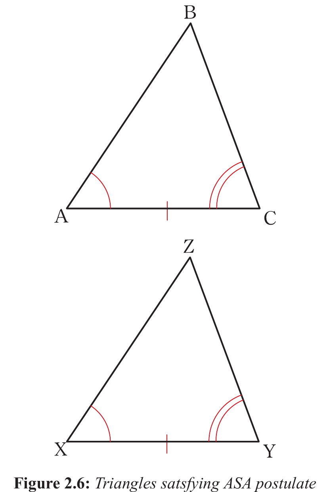

Figure 2.5 shows that,
=\
=\
=\
Thus, the two triangles satisfy the AAS postulate.
Therefore, (by AAS).
Since the two triangles are congruent, it follows that, all corresponding sides and angles are equal. That is,
Similarly, if two angles and one included side of the first triangle are equal to two angles and an included side of the second triangle, then the triangles are congruent by Angle-Side-Angle (ASA) postulate as described in Figure 2.6.

Consider triangles ABC and XZY in Figure 2.6,
=\
=\
=\
Therefore (by ASA postulate).